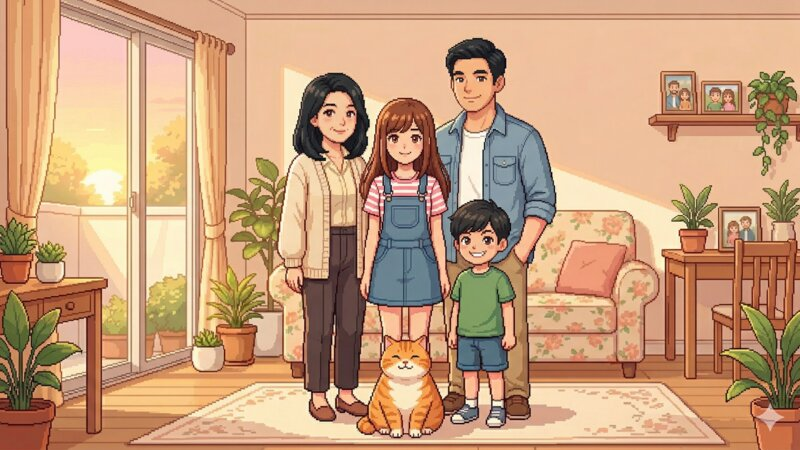

<!DOCTYPE html>
<html lang="th">
<head>
  <meta charset="UTF-8">
  <meta name="viewport" content="width=device-width, initial-scale=1.0">
  <title>Minna Journey — มินนา เส้นทางของใจ</title>
  <link href="https://fonts.googleapis.com/css2?family=Sarabun:ital,wght@0,300;0,400;0,500;0,600;0,700;1,400;1,500&display=swap" rel="stylesheet">
  <style>
    :root {
      --cream:        #FFF8F0;
      --cream-mid:    #F5EDE0;
      --cream-dark:   #EDD9C0;
      --tan:          #D4A87A;
      --brown-light:  #C4895A;
      --brown:        #8B5E3C;
      --text-dark:    #3A2414;
      --text-mid:     #6B4830;
      --text-soft:    #9B7555;
      --inner-bg:     #FAF0E0;
      --inner-border: #D4B08A;
      --hint-bg:      #F0E8FA;
      --hint-border:  #C4A0E0;
      --hint-text:    #5A3880;
      --good-bg:      #EEF7EE;
      --good-border:  #7BBF7A;
      --good-text:    #245424;
      --ok-bg:        #FFF9EC;
      --ok-border:    #D4A840;
      --ok-text:      #6A4C10;
      --stuck-bg:     #FDF0EE;
      --stuck-border: #D48870;
      --stuck-text:   #6A2C1A;
    }

    * { margin: 0; padding: 0; box-sizing: border-box; }

    html { scroll-behavior: smooth; }

    body {
      background: var(--cream);
      font-family: 'Sarabun', sans-serif;
      color: var(--text-dark);
      min-height: 100vh;
      display: flex;
      justify-content: center;
    }

    #app {
      width: 100%;
      max-width: 480px;
      min-height: 100vh;
      background: var(--cream);
      display: flex;
      flex-direction: column;
      position: relative;
    }

    /* ── Progress ── */
    .progress-bar {
      position: sticky;
      top: 0;
      z-index: 10;
      height: 3px;
      background: var(--cream-dark);
    }
    .progress-fill {
      height: 100%;
      background: var(--tan);
      transition: width 0.6s ease;
    }

    /* ── Header ── */
    .game-header {
      padding: 20px 20px 0;
      display: flex;
      align-items: center;
      gap: 10px;
    }
    .game-logo {
      width: 36px;
      height: 36px;
      background: var(--cream-mid);
      border: 1.5px solid var(--cream-dark);
      border-radius: 50%;
      display: flex;
      align-items: center;
      justify-content: center;
      font-size: 18px;
      flex-shrink: 0;
    }
    .game-title-small {
      font-size: 13px;
      font-weight: 500;
      color: var(--text-soft);
      line-height: 1.4;
    }

    /* ── Scene wrapper ── */
    .scene {
      display: flex;
      flex-direction: column;
      padding-bottom: 48px;
      animation: fadeUp 0.5s ease both;
    }

    @keyframes fadeUp {
      from { opacity: 0; transform: translateY(12px); }
      to   { opacity: 1; transform: translateY(0); }
    }

    /* ── Image ── */
    .scene-image-wrap {
      position: relative;
      width: 100%;
      aspect-ratio: 4 / 3;
      background: var(--cream-mid);
      overflow: hidden;
    }
    .scene-image {
      width: 100%;
      height: 100%;
      object-fit: cover;
      display: block;
    }
    .scene-image-placeholder {
      width: 100%;
      height: 100%;
      display: flex;
      align-items: center;
      justify-content: center;
      color: var(--text-soft);
      font-size: 14px;
    }

    /* ── Content ── */
    .scene-content {
      padding: 22px 20px 0;
    }

    /* Badge */
    .badge {
      display: inline-block;
      font-size: 11px;
      font-weight: 700;
      letter-spacing: 0.8px;
      text-transform: uppercase;
      color: var(--brown);
      background: var(--cream-mid);
      border: 1px solid var(--cream-dark);
      border-radius: 20px;
      padding: 3px 11px;
      margin-bottom: 10px;
    }

    /* Title */
    .scene-title {
      font-size: 22px;
      font-weight: 700;
      color: var(--text-dark);
      line-height: 1.45;
      margin-bottom: 14px;
    }

    /* Divider */
    .divider {
      height: 1px;
      background: var(--cream-dark);
      margin-bottom: 16px;
    }

    /* Story text */
    .scene-text {
      font-size: 15px;
      font-weight: 400;
      line-height: 2;
      color: var(--text-mid);
      margin-bottom: 16px;
    }

    /* Inner voice */
    .inner-voice {
      position: relative;
      background: var(--inner-bg);
      border-left: 3px solid var(--inner-border);
      border-radius: 0 10px 10px 0;
      padding: 12px 14px 12px 16px;
      margin-bottom: 14px;
    }
    .inner-label {
      font-size: 10px;
      font-weight: 700;
      letter-spacing: 1px;
      text-transform: uppercase;
      color: var(--brown-light);
      margin-bottom: 5px;
    }
    .inner-text {
      font-size: 14px;
      font-style: italic;
      color: var(--text-mid);
      line-height: 1.75;
    }

    /* Hint */
    .hint-box {
      background: var(--hint-bg);
      border: 1px solid var(--hint-border);
      border-radius: 10px;
      padding: 12px 14px;
      margin-bottom: 16px;
    }
    .hint-label {
      font-size: 10px;
      font-weight: 700;
      letter-spacing: 1px;
      text-transform: uppercase;
      color: var(--hint-text);
      margin-bottom: 5px;
      opacity: 0.75;
    }
    .hint-text {
      font-size: 13.5px;
      color: var(--hint-text);
      line-height: 1.75;
    }

    /* Choices */
    .choices-section {
      margin-top: 20px;
    }
    .choices-label {
      font-size: 11px;
      font-weight: 700;
      letter-spacing: 1px;
      text-transform: uppercase;
      color: var(--text-soft);
      margin-bottom: 10px;
    }
    .choices {
      display: flex;
      flex-direction: column;
      gap: 9px;
    }

    .choice-btn {
      background: white;
      border: 1.5px solid var(--cream-dark);
      border-radius: 12px;
      padding: 14px 16px;
      text-align: left;
      font-family: 'Sarabun', sans-serif;
      font-size: 15px;
      font-weight: 400;
      color: var(--text-dark);
      cursor: pointer;
      line-height: 1.65;
      transition: background 0.18s, border-color 0.18s, transform 0.12s;
      -webkit-tap-highlight-color: transparent;
    }
    .choice-btn:not(:disabled):hover {
      background: var(--cream-mid);
      border-color: var(--tan);
      transform: translateY(-1px);
    }
    .choice-btn:not(:disabled):active {
      transform: translateY(0);
    }
    .choice-btn:disabled {
      cursor: default;
      opacity: 0.55;
    }

    .choice-btn.picked-good  { background: var(--good-bg);  border-color: var(--good-border);  color: var(--good-text);  opacity: 1 !important; }
    .choice-btn.picked-ok    { background: var(--ok-bg);    border-color: var(--ok-border);    color: var(--ok-text);    opacity: 1 !important; }
    .choice-btn.picked-stuck { background: var(--stuck-bg); border-color: var(--stuck-border); color: var(--stuck-text); opacity: 1 !important; }

    /* Outcome */
    .outcome {
      display: none;
      margin-top: 18px;
      padding: 16px;
      background: white;
      border: 1px solid var(--cream-dark);
      border-radius: 12px;
      animation: fadeUp 0.35s ease both;
    }
    .outcome.visible { display: block; }

    .outcome-arrow {
      font-size: 12px;
      color: var(--text-soft);
      margin-bottom: 7px;
      font-weight: 600;
      letter-spacing: 0.5px;
    }
    .outcome-text {
      font-size: 15px;
      color: var(--text-mid);
      line-height: 1.85;
      margin-bottom: 12px;
    }
    .outcome-tag {
      display: inline-block;
      font-size: 12px;
      font-weight: 600;
      padding: 4px 11px;
      border-radius: 20px;
      line-height: 1.5;
    }
    .tag-good  { background: var(--good-bg);  color: var(--good-text);  border: 1px solid var(--good-border); }
    .tag-ok    { background: var(--ok-bg);    color: var(--ok-text);    border: 1px solid var(--ok-border); }
    .tag-stuck { background: var(--stuck-bg); color: var(--stuck-text); border: 1px solid var(--stuck-border); }

    /* Next button */
    .next-btn {
      display: none;
      width: 100%;
      margin-top: 14px;
      padding: 15px 20px;
      background: var(--brown-light);
      color: white;
      border: none;
      border-radius: 12px;
      font-family: 'Sarabun', sans-serif;
      font-size: 16px;
      font-weight: 600;
      cursor: pointer;
      transition: background 0.18s, transform 0.12s;
      -webkit-tap-highlight-color: transparent;
    }
    .next-btn:hover { background: var(--brown); transform: translateY(-1px); }
    .next-btn:active { transform: translateY(0); }
    .next-btn.visible { display: block; animation: fadeUp 0.3s ease both; }

    /* End screen */
    .end-screen {
      display: flex;
      flex-direction: column;
      align-items: center;
      text-align: center;
      padding: 60px 28px 48px;
      animation: fadeUp 0.6s ease both;
    }
    .end-ornament {
      font-size: 42px;
      margin-bottom: 22px;
      line-height: 1;
    }
    .end-badge {
      display: inline-block;
      font-size: 11px;
      font-weight: 700;
      letter-spacing: 1px;
      text-transform: uppercase;
      color: var(--brown);
      background: var(--cream-mid);
      border: 1px solid var(--cream-dark);
      border-radius: 20px;
      padding: 3px 14px;
      margin-bottom: 14px;
    }
    .end-title {
      font-size: 24px;
      font-weight: 700;
      color: var(--text-dark);
      margin-bottom: 14px;
      line-height: 1.4;
    }
    .end-text {
      font-size: 15px;
      color: var(--text-mid);
      line-height: 2;
      max-width: 320px;
    }
    .end-restart {
      margin-top: 32px;
      padding: 13px 32px;
      background: transparent;
      color: var(--brown-light);
      border: 1.5px solid var(--tan);
      border-radius: 12px;
      font-family: 'Sarabun', sans-serif;
      font-size: 15px;
      font-weight: 600;
      cursor: pointer;
      transition: all 0.18s;
    }
    .end-restart:hover {
      background: var(--cream-mid);
      border-color: var(--brown-light);
    }

    /* Ending card */
    .ending-card {
      width: 100%;
      max-width: 360px;
      background: white;
      border: 1px solid var(--cream-dark);
      border-radius: 16px;
      padding: 22px 20px;
      margin-top: 28px;
      text-align: left;
    }
    .ending-card-title {
      font-size: 11px;
      font-weight: 700;
      letter-spacing: 1px;
      text-transform: uppercase;
      color: var(--brown);
      margin-bottom: 14px;
    }
    .ending-insight-list {
      list-style: none;
      display: flex;
      flex-direction: column;
      gap: 10px;
    }
    .ending-insight-list li {
      font-size: 14.5px;
      color: var(--text-mid);
      line-height: 1.75;
      padding-left: 14px;
      position: relative;
    }
    .ending-insight-list li::before {
      content: '·';
      position: absolute;
      left: 0;
      color: var(--tan);
      font-weight: 700;
    }
    .ending-divider {
      height: 1px;
      background: var(--cream-dark);
      margin: 16px 0;
    }
    .ending-question {
      font-size: 14px;
      font-style: italic;
      color: var(--text-dark);
      line-height: 1.85;
    }

    /* Inner voice multi-line (B3) */
    .inner-line {
      font-size: 14px;
      font-style: italic;
      color: var(--text-mid);
      line-height: 1.75;
    }
    .inner-line + .inner-line {
      margin-top: 5px;
      padding-top: 5px;
      border-top: 1px dashed var(--inner-border);
    }

    /* Insight box (B3) */
    .insight-box {
      background: var(--hint-bg);
      border: 1px solid var(--hint-border);
      border-radius: 10px;
      padding: 14px 16px;
      margin-bottom: 16px;
    }
    .insight-title {
      font-size: 12px;
      font-weight: 700;
      letter-spacing: 0.5px;
      color: var(--hint-text);
      margin-bottom: 8px;
    }
    .insight-body {
      font-size: 14px;
      color: var(--hint-text);
      line-height: 1.8;
      margin-bottom: 8px;
    }
    .insight-note {
      font-size: 13px;
      font-style: italic;
      color: var(--hint-text);
      opacity: 0.8;
      line-height: 1.7;
      padding-top: 8px;
      border-top: 1px solid var(--hint-border);
    }

    /* Chooser note box (B4) */
    .chooser-box {
      background: var(--cream-mid);
      border: 1px solid var(--cream-dark);
      border-radius: 10px;
      padding: 12px 16px;
      margin-bottom: 16px;
    }
    .chooser-label {
      font-size: 10px;
      font-weight: 700;
      letter-spacing: 1px;
      text-transform: uppercase;
      color: var(--brown);
      margin-bottom: 5px;
    }
    .chooser-text {
      font-size: 13.5px;
      color: var(--text-mid);
      line-height: 1.75;
      font-style: italic;
    }

    /* Joyful choice type (B4 C) */
    .choice-btn.picked-joyful { background: #FFF0F6; border-color: #D4789A; color: #7A2045; opacity: 1 !important; }
    .tag-joyful { background: #FFF0F6; color: #7A2045; border: 1px solid #D4789A; }

    /* Summary screen */
    .summary-screen {
      padding: 28px 20px 48px;
      animation: fadeUp 0.6s ease both;
    }
    .summary-closing {
      text-align: center;
      padding: 20px 0 24px;
      border-bottom: 1px solid var(--cream-dark);
      margin-bottom: 24px;
    }
    .summary-closing-ornament {
      font-size: 32px;
      margin-bottom: 12px;
    }
    .summary-closing-title {
      font-size: 11px;
      font-weight: 700;
      letter-spacing: 1px;
      text-transform: uppercase;
      color: var(--brown);
      margin-bottom: 8px;
    }
    .summary-closing-text {
      font-size: 14.5px;
      color: var(--text-mid);
      line-height: 2;
    }
    .summary-section-label {
      font-size: 11px;
      font-weight: 700;
      letter-spacing: 1px;
      text-transform: uppercase;
      color: var(--text-soft);
      margin-bottom: 12px;
    }
    .summary-choices {
      display: flex;
      flex-direction: column;
      gap: 8px;
      margin-bottom: 20px;
    }
    .summary-choice-row {
      background: white;
      border: 1px solid var(--cream-dark);
      border-radius: 12px;
      padding: 12px 14px;
      display: flex;
      align-items: flex-start;
      gap: 10px;
    }
    .summary-scene-badge {
      font-size: 10px;
      font-weight: 700;
      letter-spacing: 0.5px;
      color: var(--brown);
      background: var(--cream-mid);
      border: 1px solid var(--cream-dark);
      border-radius: 20px;
      padding: 2px 8px;
      white-space: nowrap;
      flex-shrink: 0;
      margin-top: 2px;
    }
    .summary-choice-detail { flex: 1; min-width: 0; }
    .summary-choice-text {
      font-size: 13.5px;
      color: var(--text-mid);
      line-height: 1.65;
      margin-bottom: 6px;
    }
    .summary-type-badge {
      display: inline-block;
      font-size: 11px;
      font-weight: 600;
      padding: 2px 9px;
      border-radius: 20px;
      line-height: 1.5;
    }
    .summary-reflection {
      background: var(--inner-bg);
      border-left: 3px solid var(--inner-border);
      border-radius: 0 10px 10px 0;
      padding: 14px 16px;
      margin-bottom: 20px;
    }
    .summary-reflection-title {
      font-size: 13px;
      font-weight: 700;
      color: var(--brown-light);
      margin-bottom: 8px;
    }
    .summary-reflection-text {
      font-size: 14px;
      color: var(--text-mid);
      line-height: 1.9;
    }
    .summary-buttons {
      display: flex;
      flex-direction: column;
      gap: 10px;
      margin-top: 24px;
    }
    .summary-btn-primary {
      width: 100%;
      padding: 15px 20px;
      background: var(--brown-light);
      color: white;
      border: none;
      border-radius: 12px;
      font-family: 'Sarabun', sans-serif;
      font-size: 16px;
      font-weight: 600;
      cursor: pointer;
      transition: background 0.18s, transform 0.12s;
      -webkit-tap-highlight-color: transparent;
    }
    .summary-btn-primary:hover { background: var(--brown); transform: translateY(-1px); }
    .summary-btn-primary:active { transform: translateY(0); }
    .summary-btn-secondary {
      width: 100%;
      padding: 13px 20px;
      background: transparent;
      color: var(--text-soft);
      border: 1.5px solid var(--cream-dark);
      border-radius: 12px;
      font-family: 'Sarabun', sans-serif;
      font-size: 15px;
      font-weight: 600;
      cursor: pointer;
      transition: all 0.18s;
      -webkit-tap-highlight-color: transparent;
    }
    .summary-btn-secondary:hover { background: var(--cream-mid); border-color: var(--tan); }

    /* Feedback widget */
    .feedback-widget {
      background: white;
      border: 1px solid var(--cream-dark);
      border-radius: 16px;
      padding: 20px;
      margin-top: 20px;
      transition: opacity 1.5s ease;
    }
    .feedback-widget-title {
      font-size: 11px;
      font-weight: 700;
      letter-spacing: 1px;
      text-transform: uppercase;
      color: var(--brown);
      margin-bottom: 16px;
    }
    .feedback-q {
      font-size: 14px;
      font-weight: 600;
      color: var(--text-dark);
      margin-bottom: 10px;
      line-height: 1.5;
    }
    .feedback-emoji-row {
      display: flex;
      gap: 6px;
      justify-content: space-between;
      margin-bottom: 18px;
    }
    .fb-emoji-btn {
      flex: 1;
      font-size: 22px;
      background: var(--cream);
      border: 2px solid var(--cream-dark);
      border-radius: 12px;
      padding: 9px 2px;
      cursor: pointer;
      line-height: 1;
      transition: border-color 0.15s, background 0.15s;
      -webkit-tap-highlight-color: transparent;
    }
    .fb-emoji-btn:hover  { border-color: var(--tan); background: var(--cream-mid); }
    .fb-emoji-btn.selected { border-color: var(--brown-light); background: var(--inner-bg); }
    .fb-textarea {
      width: 100%;
      border: 1.5px solid var(--cream-dark);
      border-radius: 10px;
      padding: 11px 12px;
      font-family: 'Sarabun', sans-serif;
      font-size: 14px;
      color: var(--text-dark);
      background: var(--cream);
      resize: none;
      outline: none;
      line-height: 1.7;
      min-height: 76px;
      transition: border-color 0.15s;
      display: block;
    }
    .fb-textarea:focus { border-color: var(--tan); }
    .fb-char-count {
      font-size: 11px;
      color: var(--text-soft);
      text-align: right;
      margin-top: 4px;
      margin-bottom: 18px;
    }
    .fb-pair-btns {
      display: flex;
      gap: 8px;
      margin-bottom: 18px;
    }
    .fb-pair-btn {
      flex: 1;
      background: var(--cream);
      border: 1.5px solid var(--cream-dark);
      border-radius: 10px;
      padding: 11px 6px;
      font-family: 'Sarabun', sans-serif;
      font-size: 13.5px;
      font-weight: 500;
      color: var(--text-mid);
      cursor: pointer;
      line-height: 1.4;
      transition: border-color 0.15s, background 0.15s;
      -webkit-tap-highlight-color: transparent;
    }
    .fb-pair-btn:hover   { border-color: var(--tan); background: var(--cream-mid); }
    .fb-pair-btn.selected { border-color: var(--brown-light); background: var(--inner-bg); color: var(--text-dark); }
    .fb-submit {
      width: 100%;
      padding: 14px;
      background: var(--brown-light);
      color: white;
      border: none;
      border-radius: 12px;
      font-family: 'Sarabun', sans-serif;
      font-size: 15px;
      font-weight: 600;
      cursor: pointer;
      transition: background 0.18s, transform 0.12s;
      -webkit-tap-highlight-color: transparent;
      margin-top: 2px;
    }
    .fb-submit:disabled { opacity: 0.4; cursor: not-allowed; transform: none; }
    .fb-submit:not(:disabled):hover { background: var(--brown); transform: translateY(-1px); }
    .feedback-thankyou {
      text-align: center;
      font-size: 16px;
      font-weight: 600;
      color: var(--brown-light);
      padding: 10px 0;
      line-height: 1.7;
    }

    /* Replay panel */
    .replay-panel {
      padding: 28px 20px 48px;
      animation: fadeUp 0.4s ease both;
    }
    .replay-panel-title {
      font-size: 11px;
      font-weight: 700;
      letter-spacing: 1px;
      text-transform: uppercase;
      color: var(--text-soft);
      margin-bottom: 6px;
    }
    .replay-panel-sub {
      font-size: 15px;
      color: var(--text-mid);
      line-height: 1.7;
      margin-bottom: 20px;
    }
    .replay-grid {
      display: grid;
      grid-template-columns: 1fr 1fr;
      gap: 10px;
    }
    .replay-scene-btn {
      background: white;
      border: 1.5px solid var(--cream-dark);
      border-radius: 12px;
      padding: 16px 12px;
      font-family: 'Sarabun', sans-serif;
      font-size: 14px;
      font-weight: 600;
      color: var(--text-dark);
      cursor: pointer;
      text-align: center;
      line-height: 1.5;
      transition: border-color 0.15s, background 0.15s, transform 0.12s;
      -webkit-tap-highlight-color: transparent;
    }
    .replay-scene-btn:hover  { border-color: var(--tan); background: var(--cream-mid); transform: translateY(-1px); }
    .replay-scene-btn:active { transform: translateY(0); }

    /* Responsive refinements */
    @media (min-width: 480px) {
      #app { box-shadow: 0 0 40px rgba(100, 60, 20, 0.08); }
    }
  </style>
</head>
<body>
<div id="app">
  <div class="progress-bar"><div class="progress-fill" id="progress-fill"></div></div>
  <div id="scene-container"></div>
</div>

<script>
const tracks = {
  1: {
    title: 'มินนากับมะม่วง',
    summary: {
      closingTitle: 'จบบทที่ 1',
      closingText:  'มะม่วงไม่ได้งอนมินนา — มันแค่รอให้มินนากลับมาจริงๆ<br>ความสัมพันธ์เล็กๆ ก็สอนเราเรื่องใหญ่ๆ ได้เสมอ',
      insights:     ['ความรู้สึกเล็กๆ มีความหมายเสมอ', 'การสังเกตคือของขวัญที่ให้ได้ทุกวัน', 'บางทีแค่เติมน้ำในชาม ก็คือการบอกรัก'],
      question:     'วันนี้มีใครรอบข้างที่อาจกำลังรอบางอย่างจากเราอยู่บ้างไหม?'
    },
    scenes: [
  {
    id: 'B1',
    badge: 'B1 · จุดเริ่มต้น',
    title: 'แมวที่ไม่แยแส',
    image: 'story1_b1.jpg',
    text: 'มินนากลับบ้านมา อยากนั่งกอดมะม่วงเหมือนทุกวัน แต่มะม่วงลุกหนีไปหลังโซฟาแทน มินนายืนอยู่กลางห้องกับมือที่ยื่นออกไปเปล่าๆ',
    innerVoice: 'แค่แมว... แต่ทำไมรู้สึกแปลกๆ ในใจนะ',
    hint: null,
    choices: [
      {
        text: 'นั่งลงรอดูว่ามะม่วงจะทำอะไร',
        type: 'good',
        outcome: 'มะม่วงค่อยๆ เดินออกมาดมมือ',
        tag: 'การให้พื้นที่ — ไม่ไล่ตามคือสิ่งที่ดึงดูดที่สุด'
      },
      {
        text: 'หยิบโทรศัพท์ทำเป็นไม่สนใจ',
        type: 'ok',
        outcome: 'ห้านาทีต่อมามะม่วงมานั่งข้างๆ เอง',
        tag: 'เข้าใจด้วยเหตุผล แต่ยังห่างๆ'
      },
      {
        text: 'เดินตามพยายามอุ้มมะม่วง',
        type: 'stuck',
        outcome: 'มะม่วงวิ่งหนีไปอีกมุม',
        tag: 'ความคาดหวัง — ยิ่งบังคับยิ่งห่าง'
      }
    ]
  },
  {
    id: 'B2',
    badge: 'B2 · เริ่มหงุดหงิด ว้าวุ่นใจ',
    title: 'ยิ่งอยากยิ่งหนี',
    image: 'story1_b2.jpg',
    text: 'มะม่วงยังนั่งอยู่ห่างๆ มินนาเริ่มหงุดหงิดนิดๆ แต่ก็รู้ว่ากำลังหงุดหงิดกับแมว ซึ่งรู้สึกโง่ด้วย',
    innerVoice: 'ฉันหงุดหงิดอะไรวะ มันแค่แมว... แต่ก็ยังหงุดหงิดอยู่ดี',
    hint: 'สองเสียงในหัว "หงุดหงิด" กับ "รู้ว่าโง่ที่หงุดหงิด" — ความรู้สึกซ้อนกันเริ่มก่อตัวแล้ว',
    choices: [
      {
        text: 'บอกตัวเองว่า "โอเค ฉันหงุดหงิดอยู่ และมันก็โอเค"',
        type: 'good',
        outcome: 'ทั้งคู่อยู่ด้วยกันโดยไม่ต้องทำอะไร',
        tag: 'ตระหนักรู้ — รับรู้โดยไม่ตัดสิน'
      },
      {
        text: 'ลุกไปทำอย่างอื่น',
        type: 'ok',
        outcome: 'กลับมาแล้วมะม่วงนั่งใกล้ขึ้นนิดหน่อย',
        tag: 'หันเหความสนใจไว้ก่อน'
      },
      {
        text: 'บอกตัวเองว่า "อย่าโง่"',
        type: 'stuck',
        outcome: 'ยิ่งบอกยิ่งหงุดหงิดมากขึ้น',
        tag: 'ตำหนิตัวเอง'
      }
    ]
  },
  {
    id: 'B3',
    badge: 'B3 · หยุดสังเกตตัวเอง',
    title: 'นึกขึ้นมาได้',
    image: 'story1_b3.jpg',
    text: 'มินนานั่งเฉยๆ แล้วนึกขึ้นมาว่า ตอนเช้ารีบออกไปโรงเรียนโดยไม่ได้ลูบหัวมะม่วงเหมือนทุกวัน แล้วก็ลืมเติมน้ำในชามด้วย มะม่วงนั่งรออยู่คนเดียวทั้งวัน',
    innerVoice: [
      'เสียใจที่มะม่วงไม่มาหา...',
      'แต่ฉันก็เป็นคนลืมดูแลมันก่อน',
      'แล้วฉันก็หงุดหงิดมันอีก ทั้งที่...',
      '...ความผิดอยู่ที่ฉัน'
    ],
    hint: null,
    insight: {
      title: 'เห็นวงจรนี้ไหม?',
      body: 'เสียใจที่มะม่วงไม่มาหา → แต่ลืมดูแลมันก่อน → หงุดหงิดมัน → รู้สึกผิดที่หงุดหงิด',
      note: 'ความรู้สึกซ้อนกันแบบนี้เกิดขึ้นบ่อยมาก — แค่เห็นมันก็พอแล้ว'
    },
    choices: [
      {
        text: 'ลุกไปเติมน้ำในชามมะม่วง แล้วนั่งลงข้างๆ เงียบๆ',
        type: 'good',
        outcome: 'มะม่วงได้ยินเสียงน้ำ เดินออกมาดื่ม แล้วนั่งข้างๆ มินนา',
        tag: 'ลงมือทำ — เลือกสิ่งเล็กๆ ที่แก้ไขได้จริง'
      },
      {
        text: 'บอกตัวเองว่าเข้าใจแล้ว แล้วนั่งต่อ',
        type: 'ok',
        outcome: 'ความหงุดหงิดเบาลง แม้มะม่วงยังอยู่ห่างๆ',
        tag: 'สังเกตได้ก็เก่งแล้ว'
      },
      {
        text: 'รู้สึกผิดมากจนนั่งเซ็งอยู่',
        type: 'stuck',
        outcome: 'มะม่วงยังนั่งรออยู่ที่ชามน้ำเปล่า',
        tag: 'ความรู้สึกซ้อนกัน — หยุดได้ด้วยการทำอะไรเล็กๆ'
      }
    ]
  },
  {
    id: 'B4',
    badge: 'B4 · เลือกก้าวต่อไป',
    title: 'คืนดีแบบแมวๆ',
    image: 'story1_b4.jpg',
    text: 'ตอนเย็นมินนานั่งทำการบ้าน มะม่วงกระโดดขึ้นมานอนทับสมุดพอดี มินนาถอนหายใจ แต่ก็ขำในใจ',
    innerVoice: 'มะม่วงนอนทับงานฉัน... แต่ฉันก็ดีใจที่มันมาแล้วนะ ไม่ต้องบอกว่าคืนดีกันตรงๆ ก็ได้ มันคือมะม่วงนี่',
    hint: null,
    chooserNote: 'มินนายอมรับการคืนดีแบบที่มะม่วงทำ แม้ไม่ใช่แบบที่ตัวเองอยากได้',
    choices: [
      {
        text: 'ขยับมะม่วงออกเบาๆ ลูบหัวมันก่อนกลับมาทำการบ้านต่อ',
        type: 'good',
        outcome: 'มะม่วงนอนพิงขาแทน มินนาทำการบ้านต่อโดยมีขนส้มอุ่นๆ อยู่ข้างๆ',
        tag: 'สมดุล — ดูแลทั้งตัวเองและความสัมพันธ์ได้พร้อมกัน'
      },
      {
        text: 'ปล่อยให้มะม่วงนอนทับ ย้ายไปนั่งทำที่อื่น',
        type: 'ok',
        outcome: 'ทั้งคู่อยู่ในห้องเดียวกันอย่างสบายใจ',
        tag: 'ปล่อยให้ทุกอย่างเป็นอย่างที่มันเป็น'
      },
      {
        text: 'ดีใจมากจนวางการบ้านทิ้ง กอดมะม่วงอยู่นาน',
        type: 'joyful',
        outcome: 'ได้นอนกอดมะม่วงอบอุ่นดี แต่ตีสองยังต้องลุกมาทำการบ้านให้เสร็จ',
        tag: 'ความอบอุ่นมีจริง และการบ้านก็ยังรออยู่จริงๆ'
      }
    ]
  }
    ]
  },
  2: {
    title: 'มิตรภาพใหม่',
    summary: {
      closingTitle: 'จบบทที่ 2',
      closingText:  'ใบบัวไม่ได้รอเพื่อนที่สมบูรณ์แบบ — เธอแค่รอคนที่กล้าเดินเข้ามา<br>และมินนาก็เป็นคนนั้น',
      insights:     ['ความกลัวการปฏิเสธเป็นเรื่องปกติมาก', 'ก้าวแรกไม่ต้องสมบูรณ์ แค่ต้องกล้า', 'มิตรภาพเริ่มจากการที่ใครสักคนตัดสินใจก่อน'],
      question:     'มีใครสักคนในชีวิตที่เราอยากรู้จักมากกว่านี้ แต่ยังไม่กล้าเริ่มบ้างไหม?'
    },
    scenes: [
      {
        id: 'b1',
        badge: 'B1 • จุดเริ่มต้น',
        title: 'ใครคนนั้น',
        image: 'story2_b1.jpg',
        text: 'มินนายืนอยู่หน้าประตูห้องเรียน มองเห็นเด็กผู้หญิงคนหนึ่งนั่งอยู่คนเดียวริมหน้าต่าง หัวใจเต้นแรงขึ้นนิดหนึ่ง มือกำกระเป๋าแน่นขึ้นโดยไม่รู้ตัว',
        innerVoice: 'เธอดูเหมือนรอใครอยู่... หรือเปล่านะ',
        hint: null,
        choices: [
          { text: 'อยากเดินเข้าไปทัก แต่ก็ยังไม่กล้า', type: 'good', outcome: 'เธอยิ้มตอบ แววตาสว่างขึ้นเล็กน้อย', tag: 'ก้าวแรกที่กล้า — ความอบอุ่นเริ่มจากนี้' },
          { text: 'ยืนรอดูก่อนสักครู่', type: 'ok', outcome: 'มินนายืนอยู่สักพัก ก่อนจะค่อยๆ เดินเข้าไป', tag: 'ให้เวลาตัวเอง — แต่ไม่หยุดนิ่ง' },
          { text: 'เดินหลบไปนั่งมุมอื่น', type: 'stuck', outcome: 'มินนานั่งอยู่คนเดียว ความอยากรู้จักเธอยังอยู่ในใจ', tag: 'ความกลัว — ทำให้หยุดก้าว' }
        ]
      },
      {
        id: 'b2',
        badge: 'B2 • ว้าวุ่นใจ',
        title: 'ความคิดวิ่งวน',
        image: 'story2_b2.jpg',
        text: 'มินนายืนลังเลอยู่หน้าประตู ความคิดวิ่งวน ยิ่งคิด ยิ่งขยับไม่ออก',
        innerVoice: 'ถ้าเธอไม่อยากคุยด้วยล่ะ... ถ้าเพื่อนเธอกำลังจะมาล่ะ...',
        hint: null,
        choices: [
          { text: 'หายใจลึกๆ แล้วบอกตัวเองว่าพร้อมแล้ว', type: 'good', outcome: 'ลมหายใจทำให้ใจเบาลง มินนาก้าวได้', tag: 'รู้ลมหายใจ ความคิดเบาลง' },
          { text: 'แกล้งทำเป็นหยิบของในกระเป๋า ดูท่าทีก่อน', type: 'ok', outcome: 'เสียเวลาสักครู่ แต่ใจก็ค่อยๆ เบาลง', tag: 'ชะลอ — ไม่ใช่หยุด' },
          { text: 'บอกตัวเองว่า เดี๋ยวก็มีเพื่อนเอง ไม่ต้องทำอะไรหรอก', type: 'stuck', outcome: 'มินนาเดินผ่านโดยไม่ได้พูดอะไร ความคิดวิ่งวนอยู่นานกว่าเดิม', tag: 'หลีกเลี่ยง — บอกตัวเองว่าไม่เป็นไร' }
        ]
      },
      {
        id: 'b3',
        badge: 'B3 • หยุดสังเกต',
        title: 'เสียงในใจ',
        image: 'story2_b3.jpg',
        text: 'มินนาได้ยินเสียงในใจสองเสียง มินนานึกถึงตอนที่มะม่วงแรกๆ ก็ไม่ยอมให้จับ แต่สุดท้ายก็กลายเป็นเพื่อนกัน',
        innerVoice: 'ถ้าพลาดก็อาย... แต่ถ้าไม่ลองเลย จะรู้ได้ยังไง',
        insight: {
          title: 'ความกลัวไม่ใช่สัญญาณอันตรายเสมอไป',
          body: 'บางทีมันแค่บอกว่า สิ่งนี้สำคัญสำหรับเรา',
          note: 'แค่รู้จักความกลัว ก็ทำให้ก้าวผ่านมันได้ง่ายขึ้น'
        },
        hint: null,
        choices: [
          { text: 'ยิ้มให้ตัวเองในใจ แล้วก้าวเดิน', type: 'joyful', outcome: 'มินนาก้าวออกไปด้วยใจที่เบา', tag: 'เป็นเพื่อนกับตัวเอง' },
          { text: 'บอกตัวเองว่า ลองดูก็ได้ ไม่เสียหายอะไร', type: 'good', outcome: 'เหตุผลเล็กๆ พาให้ก้าวได้', tag: 'มองมุมใหม่ — แล้วเดินต่อ' },
          { text: 'คิดว่า ถ้าเธอไม่สนใจก็แค่นั้น', type: 'ok', outcome: 'มินนาลดความคาดหวังลง ใจเบาขึ้นนิดนึง', tag: 'ปล่อยวาง — เตรียมรับทุกผล' }
        ]
      },
      {
        id: 'b4',
        badge: 'B4 • ก้าวต่อไป',
        title: 'สวัสดี ใบบัว',
        image: 'story2_b4.jpg',
        text: 'มินนาเดินเข้าไปแล้วพูดว่า นั่งตรงนี้ได้ไหม? เด็กผู้หญิงคนนั้นเงยหน้ามา แล้วยิ้ม ได้เลย ฉันชื่อใบบัว มินนารู้สึกว่าหัวใจที่เต้นแรงมาตลอด ค่อยๆ เบาลง',
        innerVoice: 'บางทีก้าวแรกเพียงก้าวเดียว ก็เปลี่ยนทุกอย่างได้',
        chooserNote: 'มินนาเลือกที่จะกล้า แม้จะกลัว',
        hint: null,
        choices: [
          { text: 'ยิ้มกว้างๆ แล้วแนะนำตัว', type: 'joyful', outcome: 'ใบบัวยิ้มกว้างตาม ทั้งคู่เริ่มคุยกันอย่างสบาย', tag: 'เชื่อมใจ — เปิดตัวเองอย่างเต็มที่' },
          { text: 'พยักหน้าแล้วนั่งลง ค่อยๆ คุยกัน', type: 'good', outcome: 'การสนทนาค่อยๆ ไหลออกมาเองตามธรรมชาติ', tag: 'ความอบอุ่น — ดูแลตัวเองไปพร้อมกัน' },
          { text: 'นั่งลงแต่ยังเงียบๆ อยู่ก่อน', type: 'ok', outcome: 'ทั้งคู่นั่งอยู่ด้วยกันอย่างเงียบๆ ก็ไม่ได้แย่', tag: 'แค่อยู่ตรงนี้ก็เพียงพอ' }
        ]
      }
    ]
  },
  3: {
    title: 'วันที่ดีแบบเรียบง่าย',
    summary: {
      closingTitle: 'จบบทที่ 3',
      closingText:  'บางวันแค่ได้อยู่กับคนที่ทำให้เราเป็นตัวเอง<br>ก็เพียงพอแล้ว',
      insights:     ['ความรู้สึกที่ค้างอยู่มีอะไรบางอย่างที่อยากบอก', 'การยอมรับตัวเองไม่จำเป็นต้องเป็นเรื่องใหญ่', 'บางทีแค่ได้นิ่งสังเกตก็คือก้าวที่สำคัญ'],
      question:     'มีอะไรในตัวเองที่เรายังไม่กล้ายอมรับต่อหน้าคนอื่นบ้างไหม?'
    },
    scenes: [
      {
        id: 'b1',
        badge: 'B1 • จุดเริ่มต้น',
        title: 'เพราะรู้สึกเป็นตัวเอง',
        image: 'story3_b1.jpg',
        text: 'มินโนหันไปถามหยกตรงๆ ว่าทำไมถึงแต่งตัวแบบนี้ หยกหยุดคิดแป๊บนึง แล้วตอบเบาๆ ว่า \'เพราะพี่รู้สึกเป็นตัวเองมากที่สุดตอนแต่งแบบนี้ บางคนอาจมองแปลกนะ แต่พี่ก็โอเคกับที่เขามอง\' มินนาได้ยิน — รู้สึกอะไรบางอย่างค้างอยู่ในอก',
        innerVoice: 'หยกพูดง่ายๆ เลย... แต่ทำไมฟังแล้วรู้สึกหนักในใจนะ',
        hint: null,
        choices: [
          { text: 'รู้สึกอึดอัดแปลกๆ อยากเปลี่ยนเรื่องเร็วๆ', type: 'stuck', outcome: 'มินนาพูดเรื่องอื่นขึ้นมาทันที แต่ความรู้สึกนั้นยังคงอยู่', tag: 'หลีกเลี่ยง' },
          { text: 'นิ่งไปแป๊บนึง ไม่แน่ใจว่าตัวเองรู้สึกอะไร', type: 'ok', outcome: 'มินนานั่งเงียบ สายตามองลงพื้น ยังคิดอยู่', tag: 'สังเกต' },
          { text: 'รู้สึกอุ่นๆ ขึ้นในใจ แต่ก็มีอะไรบางอย่างค้างอยู่', type: 'good', outcome: 'มินนาพยักหน้าเบาๆ รู้สึกว่าสิ่งที่หยกพูดมันจริงมาก', tag: 'รับรู้' }
        ]
      },
      {
        id: 'b2',
        badge: 'B2 • ข้างในวุ่น',
        title: 'กดไว้',
        image: 'story3_b2.jpg',
        text: 'มินนาอยากถามหยกว่าไม่กลัวที่คนอื่นมองแปลกเหรอ แต่ก็กดความรู้สึกนั้นไว้ — เดี๋ยวหยกอึดอัด มินนานั่งนิ่ง ข้างในวุ่น ข้างนอกยังสงบ',
        innerVoice: 'อยากถามหยกจังเลย... แต่ถ้าหยกอึดอัดขึ้นมาล่ะ',
        hint: null,
        choices: [
          { text: 'บอกตัวเองว่าไม่ควรถาม เดี๋ยวหยกอึดอัด', type: 'stuck', outcome: 'มินนาเงียบต่อไป ความอยากรู้ยังวนอยู่ข้างใน', tag: 'หลีกเลี่ยง' },
          { text: 'คิดวนอยู่คนเดียว ยังไม่กล้าพูดอะไร', type: 'ok', outcome: 'มินนานั่งมองหยก ความคิดวนซ้ำแต่ยังไม่มีคำพูด', tag: 'สังเกต' },
          { text: 'หายใจลึกๆ สังเกตว่าตัวเองกำลังกดอะไรบางอย่างไว้', type: 'good', outcome: 'มินนารู้สึกว่าการสังเกตตัวเองนั้นก็เป็นก้าวหนึ่งแล้ว', tag: 'รับรู้' }
        ]
      }
    ]
  }
};

const APPS_SCRIPT_URL = 'https://script.google.com/macros/s/AKfycbwRIKhQ6LsVWcF4ksUJ5mJMmA-9GCCkbPd0yOt3Ax2yecLEhzulWuI44XmpdUzaoFjO/exec';  // ← วาง URL ของ Apps Script Web App ที่นี่

let currentScene = 0;
let currentTrack  = 1;
let playerChoices = [];
let currentScenes = [];
let feedbackState = { rating: null, freeText: '', recommend: null, returnIntent: null };

function updateProgress() {
  const pct = ((currentScene + 1) / currentScenes.length) * 100;
  document.getElementById('progress-fill').style.width = pct + '%';
}

function showHome() {
  document.getElementById('progress-fill').style.width = '0%';
  document.getElementById('scene-container').innerHTML = `
    <div style="padding: 32px 20px 48px;">
      <div style="text-align:center; margin-bottom: 28px;">
        <div style="font-size: 13px; font-weight: 700; letter-spacing: 2px; color: var(--text-soft); margin-bottom: 6px;">MINNA JOURNEY</div>
        <h1 style="font-size: 26px; font-weight: 700; color: var(--text-dark); line-height: 1.4;">มินนา — เส้นทางของใจ</h1>
      </div>
      <div style="width:100%; aspect-ratio: 16/9; border-radius: 16px; overflow: hidden; margin-bottom: 20px;">
        
      </div>
      <p style="text-align:center; font-size: 14px; color: var(--text-soft); line-height: 1.85; margin-bottom: 28px;">ติดตามมินนาและเพื่อนๆ<br>ในเรื่องราวของความรู้สึก</p>
      <div style="font-size: 11px; font-weight: 700; letter-spacing: 1px; color: var(--text-soft); margin-bottom: 12px;">เลือกเรื่องที่อยากเล่น</div>
      <div style="display: flex; flex-direction: column; gap: 10px;">
        <div onclick="selectTrack(1)" style="background: white; border: 1.5px solid var(--tan); border-radius: 14px; padding: 16px; cursor: pointer; display: flex; align-items: center; gap: 14px;">
          <div style="font-size: 28px;">🐱</div>
          <div style="flex:1;">
            <div style="font-size: 15px; font-weight: 600; color: var(--text-dark); margin-bottom: 3px;">มินนากับมะม่วง</div>
            <div style="font-size: 13px; color: var(--text-soft); line-height: 1.6;">เมื่อแมวไม่แยแส ความรู้สึกจะบอกอะไร?</div>
          </div>
          <div style="font-size: 18px; color: var(--tan);">›</div>
        </div>
        <div onclick="selectTrack(2)" style="background: white; border: 1.5px solid var(--tan); border-radius: 14px; padding: 16px; cursor: pointer; display: flex; align-items: center; gap: 14px;">
          <div style="font-size: 28px;">🌸</div>
          <div style="flex:1;">
            <div style="font-size: 15px; font-weight: 600; color: var(--text-dark); margin-bottom: 3px;">มิตรภาพใหม่</div>
            <div style="font-size: 13px; color: var(--text-soft); line-height: 1.6;">เมื่อกลัวการปฏิเสธ แต่ยังอยากรู้จักกัน</div>
          </div>
          <div style="font-size: 18px; color: var(--tan);">›</div>
        </div>
        <div style="background: var(--cream-mid); border: 1.5px solid var(--cream-dark); border-radius: 14px; padding: 16px; opacity: 0.6; display: flex; align-items: center; gap: 14px;">
          <div style="font-size: 28px;">💛</div>
          <div style="flex:1;">
            <div style="font-size: 15px; font-weight: 600; color: var(--text-dark); margin-bottom: 3px;">ได้รับคำชมแล้วรับได้ไหม</div>
            <div style="font-size: 13px; color: var(--text-soft);">เมื่อมีคนบอกว่าเราเก่ง เรารู้สึกยังไง?</div>
          </div>
          <div style="font-size: 10px; font-weight: 700; background: var(--cream-dark); color: var(--brown); padding: 3px 8px; border-radius: 20px;">เร็วๆ นี้</div>
        </div>
        <div style="background: var(--cream-mid); border: 1.5px solid var(--cream-dark); border-radius: 14px; padding: 16px; opacity: 0.6; display: flex; align-items: center; gap: 14px;">
          <div style="font-size: 28px;">🏠</div>
          <div style="flex:1;">
            <div style="font-size: 15px; font-weight: 600; color: var(--text-dark); margin-bottom: 3px;">ความสัมพันธ์ในครอบครัวเบาๆ</div>
            <div style="font-size: 13px; color: var(--text-soft);">บ้านคือที่ที่ปลอดภัยเสมอไหม?</div>
          </div>
          <div style="font-size: 10px; font-weight: 700; background: var(--cream-dark); color: var(--brown); padding: 3px 8px; border-radius: 20px;">เร็วๆ นี้</div>
        </div>
      </div>
    </div>
  `;
}

function preloadTrackImages(trackId) {
  const t = tracks[trackId];
  if (!t) return;
  t.scenes.forEach(s => {
    if (s.image) {
      const img = new Image();
      img.src = s.image;
    }
  });
}

function selectTrack(trackId) {
  preloadTrackImages(trackId);
  startGame(trackId);
}

function startGame(trackId) {
  currentTrack = trackId || 1;
  currentScenes = tracks[currentTrack].scenes;
  currentScene = 0;
  playerChoices = [];
  feedbackState = { rating: null, freeText: '', recommend: null, returnIntent: null };
  renderScene(0);
}

function renderScene(index) {
  const s = currentScenes[index];
  updateProgress();

  // Inner voice: string or array of lines
  const innerBodyHTML = Array.isArray(s.innerVoice)
    ? s.innerVoice.map((line, i) =>
        `<div class="inner-line" style="padding-left:${i * 8}px">${line}</div>`
      ).join('')
    : `<div class="inner-text">${s.innerVoice}</div>`;

  const hintHTML = s.hint
    ? `<div class="hint-box">
         <div class="hint-label">สังเกต</div>
         <div class="hint-text">${s.hint}</div>
       </div>`
    : '';

  const insightHTML = s.insight
    ? `<div class="insight-box">
         <div class="insight-title">&#x2736; ${s.insight.title}</div>
         <div class="insight-body">${s.insight.body}</div>
         <div class="insight-note">${s.insight.note}</div>
       </div>`
    : '';

  const chooserHTML = s.chooserNote
    ? `<div class="chooser-box">
         <div class="chooser-label">ผู้เลือก</div>
         <div class="chooser-text">${s.chooserNote}</div>
       </div>`
    : '';

  const choicesHTML = s.choices.map((c, i) =>
    `<button class="choice-btn" data-index="${i}" onclick="selectChoice(${i})">${c.text}</button>`
  ).join('');

  const html = `
    <div class="game-header">
      <div class="game-logo">&#x1F43E;</div>
      <div class="game-title-small">Minna Journey<br>มินนา เส้นทางของใจ</div>
    </div>
    <div class="scene">
      <div class="scene-image-wrap" style="margin-top:16px;">
        [ ${s.title} ]</div>'">
      </div>
      <div class="scene-content">
        <span class="badge">${s.badge}</span>
        <h1 class="scene-title">${s.title}</h1>
        <div class="divider"></div>
        <p class="scene-text">${s.text}</p>
        <div class="inner-voice">
          <div class="inner-label">เสียงในใจ</div>
          ${innerBodyHTML}
        </div>
        ${hintHTML}
        ${insightHTML}
        ${chooserHTML}
        <div class="choices-section">
          <div class="choices-label">เลือกสักทาง</div>
          <div class="choices">${choicesHTML}</div>
        </div>
        <div class="outcome" id="outcome">
          <div class="outcome-arrow">&#x25B6; ผลที่ตามมา</div>
          <div class="outcome-text" id="outcome-text"></div>
          <span class="outcome-tag" id="outcome-tag"></span>
        </div>
        <button class="next-btn" id="next-btn" onclick="nextScene()">
          ${index < currentScenes.length - 1 ? 'ไปต่อ ›' : 'จบบทนี้'}
        </button>
      </div>
    </div>
  `;

  document.getElementById('scene-container').innerHTML = html;
  window.scrollTo({ top: 0 });
}

function selectChoice(index) {
  const s = currentScenes[currentScene];
  const choice = s.choices[index];

  playerChoices.push({
    sceneId: s.id,
    choiceText: choice.text,
    type: choice.type,
    tag: choice.tag
  });

  document.querySelectorAll('.choice-btn').forEach((btn, i) => {
    btn.disabled = true;
    if (i === index) {
      btn.classList.add('picked-' + choice.type);
    }
  });

  const outcomeEl   = document.getElementById('outcome');
  const outcomeText = document.getElementById('outcome-text');
  const outcomeTag  = document.getElementById('outcome-tag');
  const nextBtn     = document.getElementById('next-btn');

  outcomeText.textContent = choice.outcome;
  outcomeTag.textContent  = choice.tag;
  outcomeTag.className    = 'outcome-tag tag-' + choice.type;
  outcomeEl.classList.add('visible');
  nextBtn.classList.add('visible');

  setTimeout(() => {
    outcomeEl.scrollIntoView({ behavior: 'smooth', block: 'nearest' });
  }, 80);
}

function nextScene() {
  currentScene++;
  if (currentScene < currentScenes.length) {
    renderScene(currentScene);
  } else {
    showSummary();
  }
}

const typeLabels = {
  good:   'เชื่อมใจ',
  ok:     'พอไหว',
  stuck:  'ติดขัด',
  joyful: 'อบอุ่น'
};

function getReflection(choices) {
  const counts = {};
  choices.forEach(c => { counts[c.type] = (counts[c.type] || 0) + 1; });
  const stuck   = counts.stuck  || 0;
  const goodish = (counts.good  || 0) + (counts.joyful || 0);

  if (currentTrack === 3) {
    if (stuck === 0) {
      return { title: 'มินนารับรู้ความรู้สึกของตัวเองได้ดีมาก', text: 'การหยุดสังเกตสิ่งที่ค้างอยู่ในใจ แทนที่จะผลักมันออกไป คือสิ่งที่ต้องอาศัยความกล้ามากกว่าที่คิด' };
    } else if (stuck >= 1) {
      return { title: 'ความรู้สึกที่อึดอัดก็มีที่มาเสมอ', text: 'ไม่ต้องรีบเข้าใจทุกอย่างในทีเดียว แค่รู้ว่ามันอยู่ที่นั่น ก็ถือว่าเริ่มต้นแล้ว' };
    } else {
      return { title: 'มินนากำลังเรียนรู้จากสิ่งรอบข้าง', text: 'บางทีคนที่กล้าเป็นตัวเองต่อหน้าเรา ก็คือกระจกที่ทำให้เราเห็นตัวเองชัดขึ้น' };
    }
  }

  if (currentTrack === 2) {
    if (choices.length === 4 && choices[3].type === 'joyful') {
      return {
        title: 'มินนาเปิดใจอย่างเต็มที่ 🌸',
        text:  'การยิ้มกว้างๆ แบบนั้นต้องอาศัยความกล้าพอสมควรนะ มินนาทำให้ใบบัวรู้สึกว่าตัวเองก็มีคนอยากนั่งด้วยเช่นกัน'
      };
    }
    if (stuck === 0) {
      return {
        title: 'มินนาก้าวผ่านความกลัวได้อย่างงดงาม',
        text:  'ตลอดเรื่องมินนาเลือกที่จะเผชิญแทนที่จะหนี นั่นไม่ใช่เรื่องเล็กน้อย การเริ่มต้นมิตรภาพใหม่ต้องอาศัยความกล้าที่หลายคนไม่ยอมใช้'
      };
    } else if (stuck >= 3) {
      return {
        title: 'วันนี้ความกลัวดังกว่าเสียงอื่น และมันก็โอเคนะ',
        text:  'ความกลัวการถูกปฏิเสธเป็นเรื่องปกติมาก มินนาไม่ได้อ่อนแอ แค่กำลังเรียนรู้ว่าจะอยู่กับความรู้สึกนั้นอย่างไร วันไหนพร้อม ก้าวนั้นก็จะมาเอง'
      };
    } else if (goodish >= 2) {
      return {
        title: 'มินนาเลือกที่จะกล้า แม้จะไม่แน่ใจ',
        text:  'ไม่มีใครมั่นใจ 100% ก่อนเริ่มมิตรภาพใหม่ แต่มินนาเลือกเดินหน้า สิ่งสำคัญไม่ใช่ผลลัพธ์ แต่คือการที่มินนาเชื่อใจตัวเองพอที่จะลอง'
      };
    } else {
      return {
        title: 'มินนากำลังเรียนรู้ว่าการเชื่อมใจต้องอาศัยความกล้า',
        text:  'บางก้าวรู้สึกหนัก บางก้าวรู้สึกง่าย ทุกครั้งที่มินนาสังเกตเห็นความรู้สึกของตัวเองก็นับว่าก้าวหน้าแล้ว'
      };
    }
  }

  // Track 1
  if (choices.length === 4 && choices[3].type === 'joyful') {
    return {
      title: 'การได้กอดมะม่วงทำให้ใจมินนาอุ่นขึ้นจริงๆ 🧡',
      text:  'แต่ตีสองที่ต้องลุกมาทำการบ้าน... มินนารู้สึกยังไงกับตัวเองตอนนั้นนะ?'
    };
  }
  if (stuck === 0) {
    return {
      title: 'มินนาเดินทางได้อย่างนุ่มนวลมาก',
      text:  'ตลอดวันนี้มินนารับรู้ความรู้สึกของตัวเองและดูแลความสัมพันธ์ไปพร้อมกัน สิ่งที่มินนาทำอาจดูเล็กน้อย แต่มันสะท้อนความใส่ใจที่ลึกมาก'
    };
  } else if (stuck >= 3) {
    return {
      title: 'วันนี้หนักหน่อย และมันก็โอเคนะ',
      text:  'บางวันเราก็ติดอยู่กับความรู้สึกนานกว่าปกติ ไม่ได้แปลว่าเราผิดพลาด แค่แปลว่าเราเป็นคนธรรมดาที่ยังเรียนรู้อยู่ เหมือนมะม่วงที่บางทีก็ต้องการพื้นที่ เราก็ต้องการแบบนั้นบ้าง'
    };
  } else if (goodish >= 2) {
    return {
      title: 'มินนาสังเกตและเลือกได้ดีมาก',
      text:  'มินนาไม่ได้ทำทุกอย่างได้สมบูรณ์แบบ แต่สังเกตเห็นความรู้สึกและเลือกทางออกที่ดูแลทั้งตัวเองและความสัมพันธ์ได้ นั่นคือสิ่งที่สำคัญที่สุด'
    };
  } else {
    return {
      title: 'มินนากำลังเรียนรู้อยู่',
      text:  'ทุกครั้งที่เราสังเกตเห็นว่าตัวเองทำอะไรไป ก็ถือว่าก้าวหน้าแล้ว ไม่มีทางเลือกไหนผิดหรือถูกตลอดไป มีแค่ทางที่เราเรียนรู้จากมัน'
    };
  }
}

function showSummary() {
  document.getElementById('progress-fill').style.width = '100%';
  const reflection = getReflection(playerChoices);
  const { closingTitle, closingText, insights, question } = tracks[currentTrack].summary;

  const choicesHTML = playerChoices.map(c => `
    <div class="summary-choice-row">
      <span class="summary-scene-badge">${c.sceneId}</span>
      <div class="summary-choice-detail">
        <div class="summary-choice-text">${c.choiceText}</div>
        <span class="summary-type-badge tag-${c.type}">${typeLabels[c.type] || c.type}</span>
      </div>
    </div>
  `).join('');

  document.getElementById('scene-container').innerHTML = `
    <div class="game-header">
      <div class="game-logo">&#x1F43E;</div>
      <div class="game-title-small">Minna Journey<br>มินนา เส้นทางของใจ</div>
    </div>
    <div class="summary-screen">
      <div class="summary-closing">
        <div class="summary-closing-ornament">&#x2736;</div>
        <div class="summary-closing-title">${closingTitle}</div>
        <p class="summary-closing-text">${closingText}</p>
      </div>

      <div class="summary-section-label">สิ่งที่มินนาเลือกวันนี้</div>
      <div class="summary-choices">${choicesHTML}</div>

      <div class="summary-reflection">
        <div class="summary-reflection-title">${reflection.title}</div>
        <div class="summary-reflection-text">${reflection.text}</div>
      </div>

      <div class="ending-card">
        <div class="ending-card-title">วันนี้มินนาเรียนรู้ว่า...</div>
        <ul class="ending-insight-list">
          ${insights.map(i => `<li>${i}</li>`).join('')}
        </ul>
        <div class="ending-divider"></div>
        <p class="ending-question">${question}</p>
      </div>

      <div id="feedback-widget" class="feedback-widget">
        <div class="feedback-widget-title">บอกความรู้สึกให้หน่อยนะ</div>

        <div class="feedback-q">วันนี้รู้สึกยังไงบ้าง?</div>
        <div class="feedback-emoji-row">
          <button class="fb-emoji-btn" onclick="selectEmoji(1)">😔</button>
          <button class="fb-emoji-btn" onclick="selectEmoji(2)">😐</button>
          <button class="fb-emoji-btn" onclick="selectEmoji(3)">🙂</button>
          <button class="fb-emoji-btn" onclick="selectEmoji(4)">😊</button>
          <button class="fb-emoji-btn" onclick="selectEmoji(5)">😄</button>
        </div>

        <div class="feedback-q">อยากบอกอะไรกับมินนาไหม?</div>
        <textarea class="fb-textarea" id="fb-text" placeholder="พิมพ์ได้เลยนะ..." maxlength="200" rows="3" oninput="updateFbText(this)"></textarea>
        <div class="fb-char-count" id="fb-char-count">0 / 200</div>

        <div class="feedback-q">อยากชวนเพื่อนมาเล่นด้วยไหม?</div>
        <div class="fb-pair-btns">
          <button class="fb-pair-btn" id="fb-rec-yes" onclick="selectPair('recommend','yes')">อยากเลย 💛</button>
          <button class="fb-pair-btn" id="fb-rec-no"  onclick="selectPair('recommend','uncertain')">ยังไม่แน่ใจ</button>
        </div>

        <div class="feedback-q">อยากกลับมาเล่นเรื่องอื่นอีกไหม?</div>
        <div class="fb-pair-btns">
          <button class="fb-pair-btn" id="fb-ret-yes" onclick="selectPair('returnIntent','yes')">อยากมาก 🌟</button>
          <button class="fb-pair-btn" id="fb-ret-no"  onclick="selectPair('returnIntent','uncertain')">ขอดูก่อน</button>
        </div>

        <button class="fb-submit" id="fb-submit" onclick="submitFeedback()" disabled>ส่งความรู้สึก</button>
      </div>

      <div class="summary-buttons">
        <button class="summary-btn-primary" onclick="showReplayPanel()">เลือกใหม่อีกครั้ง</button>
        <button class="summary-btn-secondary" onclick="showHome()">กลับหน้าหลัก</button>
      </div>
    </div>
  `;
  window.scrollTo({ top: 0 });
}

function selectEmoji(n) {
  feedbackState.rating = n;
  document.querySelectorAll('.fb-emoji-btn').forEach((btn, i) => {
    btn.classList.toggle('selected', i + 1 === n);
  });
  updateSubmitBtn();
}

function selectPair(field, val) {
  feedbackState[field] = val;
  const prefix = field === 'recommend' ? 'fb-rec' : 'fb-ret';
  document.getElementById(prefix + '-yes').classList.toggle('selected', val === 'yes');
  document.getElementById(prefix + '-no').classList.toggle('selected',  val === 'uncertain');
  updateSubmitBtn();
}

function updateFbText(el) {
  feedbackState.freeText = el.value;
  const count = document.getElementById('fb-char-count');
  if (count) count.textContent = el.value.length + ' / 200';
}

function updateSubmitBtn() {
  const btn = document.getElementById('fb-submit');
  if (!btn) return;
  btn.disabled = !(feedbackState.rating !== null &&
                   feedbackState.recommend !== null &&
                   feedbackState.returnIntent !== null);
}

function submitFeedback() {
  const payload = {
    timestamp:     new Date().toISOString(),
    track:         currentTrack,
    choicePattern: playerChoices,
    rating:        feedbackState.rating,
    freeText:      feedbackState.freeText || '',
    recommend:     feedbackState.recommend,
    returnIntent:  feedbackState.returnIntent
  };
  if (APPS_SCRIPT_URL) {
    fetch(APPS_SCRIPT_URL, {
      method: 'POST',
      headers: { 'Content-Type': 'application/json' },
      body: JSON.stringify(payload)
    }).catch(() => {});
  }
  const widget = document.getElementById('feedback-widget');
  if (!widget) return;
  widget.innerHTML = '<div class="feedback-thankyou">ขอบคุณนะ 🌸 มินนาจะจำไว้เสมอ</div>';
  setTimeout(() => { widget.style.opacity = '0'; }, 1800);
  setTimeout(() => { widget.style.display = 'none'; }, 3300);
}

function showReplayPanel() {
  document.getElementById('scene-container').innerHTML = `
    <div class="game-header">
      <div class="game-logo">&#x1F43E;</div>
      <div class="game-title-small">Minna Journey<br>มินนา เส้นทางของใจ</div>
    </div>
    <div class="replay-panel">
      <div class="replay-panel-title">เลือกใหม่</div>
      <p class="replay-panel-sub">อยากย้อนกลับไปตรงไหน?<br>การเลือกก่อนหน้าจะถูกเก็บไว้ให้</p>
      <div class="replay-grid">
        ${currentScenes.map((s, i) => `<button class="replay-scene-btn" onclick="replayFrom(${i})">ย้อนกลับ ${s.id.toUpperCase()} · ${s.title}</button>`).join('')}
      </div>
    </div>
  `;
  window.scrollTo({ top: 0 });
}

function replayFrom(sceneIndex) {
  playerChoices = playerChoices.slice(0, sceneIndex);
  feedbackState = { rating: null, freeText: '', recommend: null, returnIntent: null };
  currentScene = sceneIndex;
  renderScene(sceneIndex);
}

function replayTrack() {
  currentScene = 0;
  playerChoices = [];
  feedbackState = { rating: null, freeText: '', recommend: null, returnIntent: null };
  renderScene(0);
}

function showEnd() {
  const endContent = currentTrack === 2 ? {
    badge: 'จบบทที่ 2',
    title: 'จบบทที่ 2',
    text: 'ใบบัวไม่ได้รอเพื่อนที่สมบูรณ์แบบ — เธอแค่รอคนที่กล้าเดินเข้ามา<br><br>และมินนาก็เป็นคนนั้น',
    insights: ['ความกลัวการปฏิเสธเป็นเรื่องปกติมาก', 'ก้าวแรกไม่ต้องสมบูรณ์ แค่ต้องกล้า', 'มิตรภาพเริ่มจากการที่ใครสักคนตัดสินใจก่อน'],
    question: 'มีใครสักคนในชีวิตที่เราอยากรู้จักมากกว่านี้ แต่ยังไม่กล้าเริ่มบ้างไหม?'
  } : {
    badge: 'จบบทที่ 1',
    title: 'จบบทที่ 1',
    text: 'มะม่วงไม่ได้งอนมินนา — มันแค่รอให้มินนากลับมาจริงๆ<br><br>ความสัมพันธ์เล็กๆ ก็สอนเราเรื่องใหญ่ๆ ได้เสมอ',
    insights: ['ความรู้สึกเล็กๆ มีความหมายเสมอ', 'การสังเกตคือของขวัญที่ให้ได้ทุกวัน', 'บางทีแค่เติมน้ำในชาม ก็คือการบอกรัก'],
    question: 'วันนี้มีใครรอบข้างที่อาจกำลังรอบางอย่างจากเราอยู่บ้างไหม?'
  };
  document.getElementById('progress-fill').style.width = '100%';
  document.getElementById('scene-container').innerHTML = `
    <div class="game-header">
      <div class="game-logo">&#x1F43E;</div>
      <div class="game-title-small">Minna Journey<br>มินนา เส้นทางของใจ</div>
    </div>
    <div class="end-screen">
      <div class="end-ornament">&#x2736;</div>
      <span class="end-badge">${endContent.badge}</span>
      <h2 class="end-title">${endContent.title}</h2>
      <p class="end-text">${endContent.text}</p>
      <div class="ending-card">
        <div class="ending-card-title">วันนี้มินนาเรียนรู้ว่า...</div>
        <ul class="ending-insight-list">
          ${endContent.insights.map(i => `<li>${i}</li>`).join('')}
        </ul>
        <div class="ending-divider"></div>
        <p class="ending-question">${endContent.question}</p>
      </div>
      <button class="end-restart" onclick="restart()">เริ่มใหม่อีกครั้ง</button>
      <button class="end-restart" onclick="showHome()" style="margin-top:10px; border-color:var(--cream-dark); color:var(--text-soft);">กลับไปเลือกเรื่องอื่น</button>
    </div>
  `;
}

function restart() {
  currentScene = 0;
  playerChoices = [];
  feedbackState = { rating: null, freeText: '', recommend: null, returnIntent: null };
  renderScene(0);
}

showHome();
</script>
</body>
</html>
